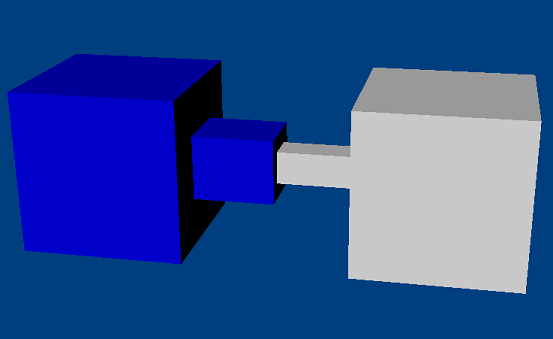

A prismatic joint permits relative translational movement between two bodies along an axis, but no relative rotational movement at all. It is usually necessary to add joint limits to prevent the bodies from getting too far from each other along the joint axis. If the distance becomes too great, then the SDK can have difficulty maintaining the joint constraints (see Joint Limits). NOTE: A prismatic joint is similar to a cylindrical joint except that it prevents rotation around the joint axis.
An example for a prismatic joint is a pair of motorcycle shock
absorbers.
DOFs removed: 5
DOFs remaining: 1
|
Parameter |
Description |
| actor[0] | First actor |
| actor[1] | Second actor |
| localAnchor[0] | Point attached to slide axis on the first actor. |
| localAnchor[1] | Point attached to slide axis on the second actor (the attachment points should coincide). |
| localAxis[0] | The axis along which to slide in the first actor's frame. |
| localAxis[1] | The axis along which to slide in the second actor's frame (should match localAxis[0] in the global frame). |
NOTE: When setting localAnchor[] it is generally convenient to
use
setGlobalAnchor() to set the anchor with a world space point.
NOTE: When setting localAxis[] it is generally convenient to use
setGlobalAxis() to set the axis with a world space axis.
NOTE: When specifying the joint axis it is also important to specify
the
localNormal[] which should be orthogonal to the localAxis[]. The
localNormal[] is needed to specify joint limits.
NxPrismaticJointDesc prismaticDesc;
prismaticDesc.actor[0] = actor0;
prismaticDesc.actor[1] = actor1;
prismaticDesc.setGlobalAnchor(globalAnchor); //The point constrained to the slide axis.
prismaticDesc.setGlobalAxis(globalAxis); //The axis along which to slide.
NxPrismaticJoint* prismJoint = (NxPrismaticJoint *)gScene->createJoint(prismaticDesc);
prismJoint->setLimitPoint(globalAnchor); //Constrain sliding a specific range.
prismJoint->addLimitPlane(-globalAxis, globalAnchor + 1.5*globalAxis);
prismJoint->addLimitPlane(globalAxis, globalAnchor - 1.5*globalAxis);